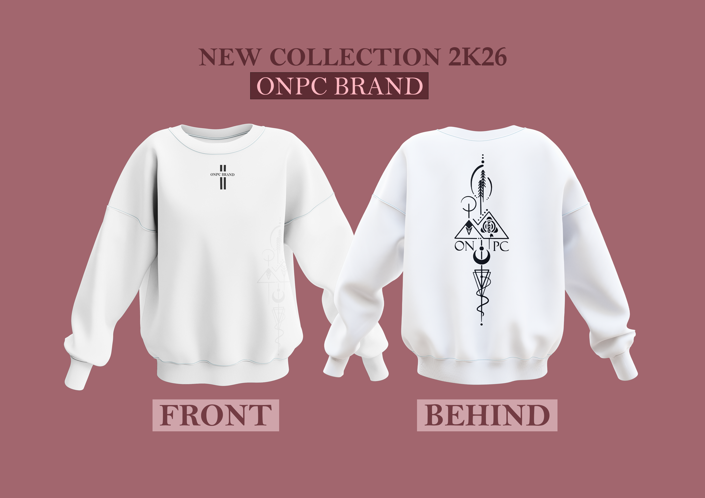

Introduction
Beaucoup d'entreprises investissent dans leurs produits, leurs services ou leur communication, mais négligent leur image de marque. Pourtant, le branding joue un rôle essentiel dans la perception qu'ont les clients d'une entreprise. Une identité visuelle incohérente ou mal conçue peut rapidement nuire à la crédibilité d'une marque et freiner son développement.
Dans un marché de plus en plus concurrentiel, les consommateurs accordent une grande importance à l'apparence, à la cohérence et au professionnalisme d'une entreprise. Un branding fort permet de créer la confiance, d'améliorer la visibilité et de se différencier de la concurrence.
Découvrez dans cet article les dix erreurs de branding les plus fréquentes qui peuvent affaiblir l'image d'une entreprise et les solutions pour les éviter.
1. Utiliser un logo amateur
Le logo est souvent le premier élément visuel qu'un client remarque lorsqu'il découvre une entreprise. Un logo mal conçu, flou ou réalisé sans réflexion stratégique peut donner une impression d'amateurisme et réduire immédiatement la confiance du public.
Un logo professionnel doit être simple, mémorable, adaptable et représentatif des valeurs de la marque.
Un logo n'est pas seulement un dessin. Il représente l'identité et la crédibilité d'une entreprise.
2. Changer constamment d'identité visuelle
Certaines entreprises modifient régulièrement leur logo, leurs couleurs ou leur style graphique. Cette pratique crée de la confusion auprès du public et affaiblit la reconnaissance de la marque.
Une identité visuelle efficace repose sur la cohérence et la stabilité. Les grandes marques conservent généralement leurs éléments visuels pendant de nombreuses années afin de renforcer leur image dans l'esprit des consommateurs.
3. Copier la concurrence
S'inspirer des tendances est normal, mais copier directement l'identité visuelle d'un concurrent est une erreur stratégique.
Une marque doit posséder sa propre personnalité afin de se différencier sur le marché. Une identité unique permet d'attirer l'attention et de renforcer la mémorisation auprès des clients.
4. Ignorer la cohérence visuelle
Le site web, les réseaux sociaux, les cartes de visite et les supports publicitaires doivent partager la même identité graphique.
Lorsque les couleurs, les polices ou les styles changent constamment d'un support à l'autre, l'entreprise paraît moins professionnelle et moins crédible.
La cohérence visuelle est l'un des piliers d'un branding réussi.
5. Négliger la qualité des visuels
Les images floues, les logos pixelisés ou les visuels de mauvaise qualité donnent une image peu professionnelle de l'entreprise.
Aujourd'hui, les consommateurs associent souvent la qualité de la communication visuelle à la qualité des produits ou services proposés.
6. Utiliser trop de couleurs
Une palette de couleurs trop large rend la communication visuelle confuse et difficile à mémoriser.
Les marques les plus fortes utilisent généralement un nombre limité de couleurs afin de créer une identité visuelle cohérente et reconnaissable.
7. Choisir des polices inadaptées
La typographie influence fortement la perception d'une marque. Des polices difficiles à lire ou mal associées peuvent nuire à l'expérience utilisateur et à l'image professionnelle de l'entreprise.
Il est recommandé de sélectionner des polices lisibles, cohérentes et adaptées à l'activité de la marque.



8. Négliger sa présence numérique
Aujourd'hui, le site web et les réseaux sociaux représentent souvent le premier point de contact entre une entreprise et ses clients.
Une présence numérique négligée peut rapidement faire perdre des opportunités commerciales et réduire la confiance du public.
9. Communiquer sans stratégie
Publier du contenu sans objectif précis rend la communication incohérente et inefficace.
Chaque publication doit contribuer à renforcer l'image de marque et à atteindre des objectifs clairement définis.
10. Penser que le branding se limite au logo
Le branding ne se résume pas à un logo ou à quelques couleurs.
Il englobe l'identité visuelle, la communication, les valeurs, le ton de la marque, l'expérience client et la perception globale de l'entreprise.
Une marque forte est le résultat d'une stratégie cohérente et d'une expérience mémorable.
Comment éviter ces erreurs ?
Construire une marque forte demande de la réflexion, de la cohérence et une véritable stratégie visuelle.
Pour éviter ces erreurs, il est important de définir clairement l'identité de votre entreprise, vos objectifs, votre public cible et les valeurs que vous souhaitez transmettre.
Investir dans une identité visuelle professionnelle permet d'améliorer la crédibilité, la visibilité et la confiance accordée à votre marque.
Conclusion
Le branding est bien plus qu'un simple logo. Il représente l'image globale qu'une entreprise projette auprès de ses clients, partenaires et collaborateurs.
Éviter ces dix erreurs permet de construire une identité visuelle forte, cohérente et durable capable de renforcer la confiance du public et de favoriser la croissance de l'entreprise.
Les marques qui investissent dans leur image développent généralement une meilleure visibilité, une plus grande crédibilité et un avantage concurrentiel durable.
Chez Afro Vecteur, nous accompagnons les entreprises, organisations et entrepreneurs dans la création d'identités visuelles professionnelles, cohérentes et mémorables afin de renforcer leur impact et leur crédibilité.